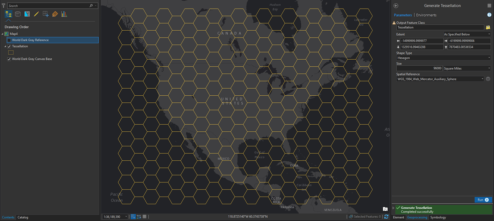
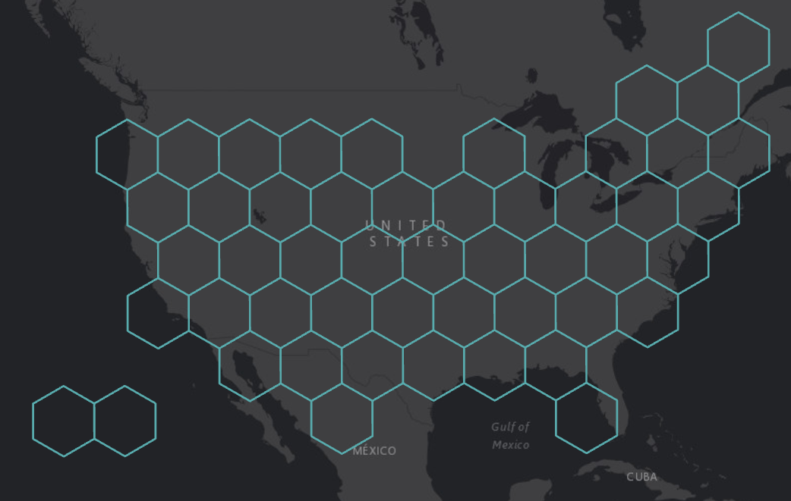

In all honestly, these were inspired by carto-genius John Nelson's electo-cubo-gram map. The minute I saw his, I knew I needed to check out the "Generate Tessellation" tool and explore what can be done with it. My commute is a big part of my day, so I thought what better subject than that for my map?


To run the "Generate Tessellation" tool you don't need any layers on your map. You can just run the tool over the basemap. This was the second hardest step for me -- finding the right size of hexagons. I ended up looking up the area of Michigan (96,716 square miles! or 73,000 football fields) and working around that number.
The hardest step in this map creation was trying to replicate the shape of the US with all 50 states with their basic spatial relationships intact. This was mostly hard because the northeast is so densely packed with states. I also had to rotate the layer using Editing tools to make it look closer to John Nelson's result (this is important because his square images to get the cube effect line up only this way). My final 50 hexagons kinda reminds me of aboriginal art I've seen of geckos and platypuses.
In the attribute table, I created a column called STATE and gave each hexagon a state abbreviation. Then I joined it with a table of Census Bureau data with state commuting details.
I symbolized using graduated symbols and then varying symbology by attribute with the Multipart Color Scheme. Following John Nelson's tutorial, each state also got a cube shape using the images he provided. It also took some fiddling to make these work properly.